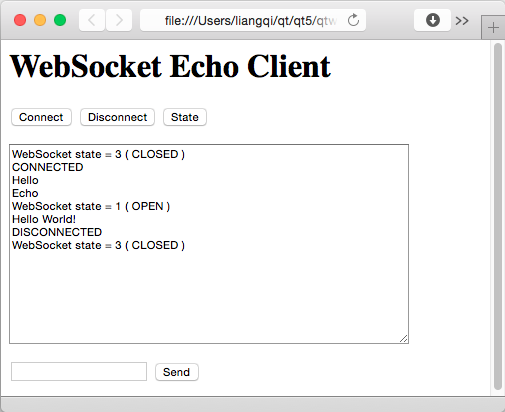

Echo Server Example
The Echo Server Example shows how to create a simple server application that sends back the messages it receives, using the WebSocket API.
If your web browser supports WebSocket, you can also use it to open the echoclient.html file, and operate like the following screenshot.

Client example
Files:
See also Echo Client Example.